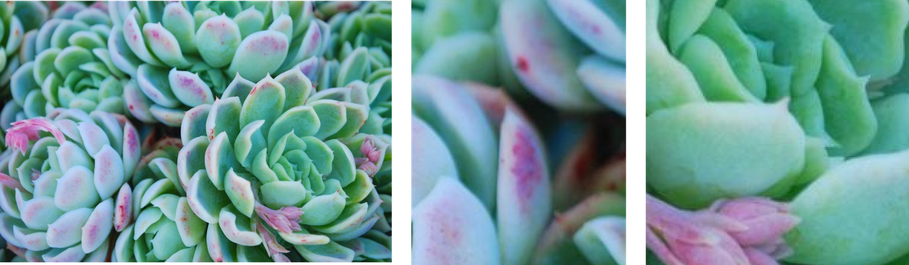
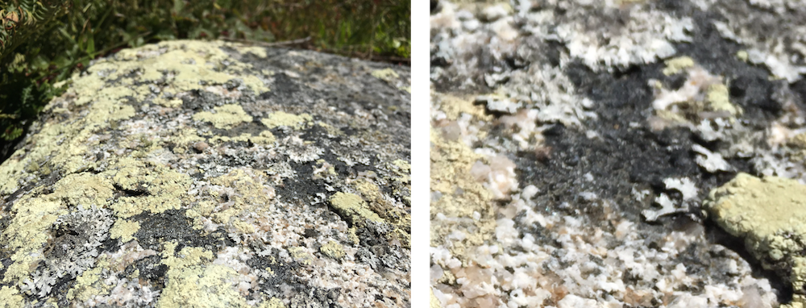
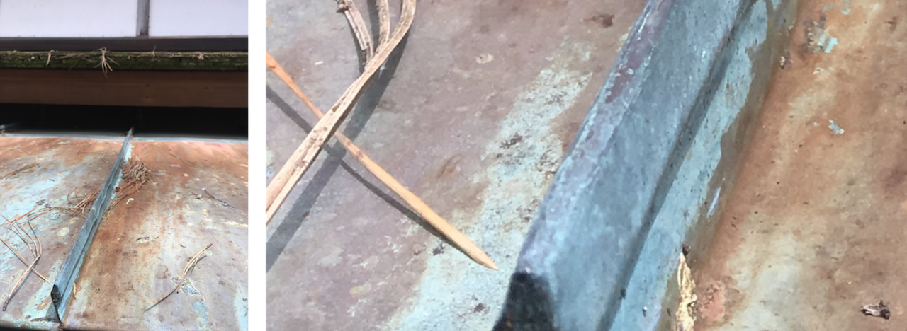
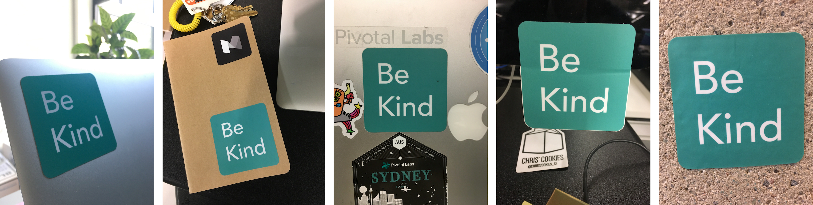
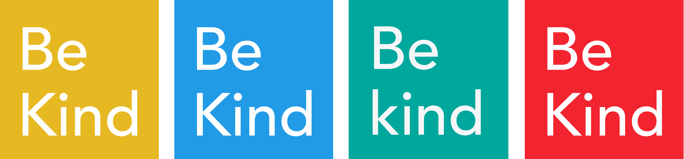

100 Days of Color Palettes
Question: How can color be used to express ideas and feelings?
Day 9, Small Green

Succulents are cute, and I knew that I had to make a color palette focus on them at some point. So I came up with the idea of a company called “Small Green” that sells succulents. For the site, it would have one main color for the background, two different text colors, and two colors for primary and secondary action buttons. I pulled all of these colors from this image of succulents. With these colors I aimed to create a sense of cute naturalness.
Day 38, Lichen in Marin

I went on a hike with friends in Marin, and came across several rocks covered in lichen, the variations in muted colors really got me interested. There were pink lichen covered by greenish-yellow lichen, and the white lichen looked bluish when in shadows. With these colors I aimed to capture the sunniness, the calm, and the rustic beauty of Marin.
Day 10, On Novelty

I was in the Japanese tea gardens in Golden Gate park, and while looking around I saw this rusted overhang above the gift shop. The way the blue rust mixed with cool purples and warm oranges was really interesting to me, so I decided to capture it. I then went on the internet looking for quotes talking about the beauty of oldness, and came across this one by Yukio Mishima. Not only did it fit thematically, it also reminded me of the experience of making color palettes on my own. Several times when I created a color palette, I felt like I was creating something new. Then I’d look around and find other people used the same color palette elsewhere. The colors of this palette were meant to express the beauty of aged objects with muted tones that maintain a harmonious balance of emphasis and contrast.
Day 100, Passing Light

Snapchat as a product and experience is an enthusiastic, vibrant embrace of impermanence. I wanted to extend this feeling into a color palette, and chose the login screen as a template. The current login/signup screen feels heavy and restrained compared to the rest of the app. I removed the weight by freeing the text from boxes and changing them to Futura medium italic. The intention behind this styling was to add motion and and energy with the italics. The background fades from solid yellow on top to a lighter yellow at the bottom, imparting a sense of floating to the text and ghost icon. The sense of floating is a reference to the impermanence of the photos and text shared. The sense of weightlessness is furthered by lifting the text away from the bottom of the page. In addition to reinforcing the aesthetics of Snapchat, this places the target areas in a more ergonomic position. For comparison, see the login screen as of July 2017 below.

The Other 96
These are just four examples from my hundred days project. There are many more I would love to share, but don't have the room here. For a look at them, visit my instagram: ColbyColby.

Design of the Be Kind Stickers
Goal: Promote diversity and inclusion at Pivotal
Why We Made a Sticker
In late 2016, I designed stickers with a coworker to promote diversity and inclusion at Pivotal. We decided to print stickers because tech workers often use stickers on their laptops to express their identity. By giving out stickers, we could make it easier for people to identify with the values of diversity and inclusion.
Team
I worked closely with Maryam who managed the funding and printing. Together we came in early before work and collaborated over lunches.
Requirements
We had a few requirements. It needed to:
- Connect to Pivotal
- Make a statement about diversity and inclusion
- Be aesthetically pleasing
Message
We read through the mission statement of the Diversity and Inclusion group to pull out themes and drew on other aspirational phrases:
- Strength in Difference
- Unity in Diversity
- One Love
- Be Kind
We ended up going with “Be Kind” because it promotes Diversity and Inclusion in words that are accessible and uncontroversial. Out of kindness comes empathy, listening, and inclusion. Also, as one of Pivotal’s core values it ties people together across the company.
Colors
We then had to choose a color, and started by working with Pivotal's branding color palette.
I liked the red and blue the most. But in testing with other employees, I learned that they liked how teal is Pivotal’s main color, aka. “Pivoteal.” Since I wanted this sticker to speak to people across Pivotal, I went with the teal.
Sticker Adoption
People from the SF office office liked these stickers, and started sharing them with other offices. Within months, NYC, Dublin, and Paris printed their own batches. I think the sticker design became so popular because it spoke to the values of the audience and tied in motifs of color and phrasing that connect to their identity as Pivotal employees. More recently I adapted the sticker to celebrate pride month, and it has since become the top-listed item on Pivotal’s store.